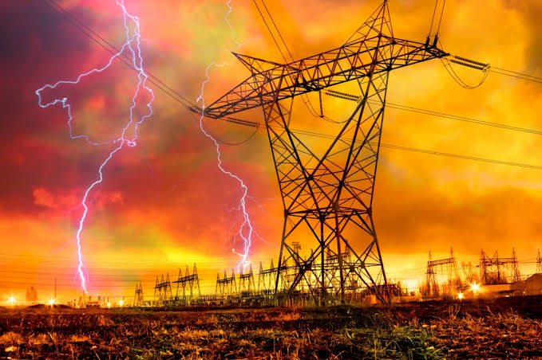

"Be the bright spark to engineer ideas into reality." Department of Electrical and Electronics Engineering was started in August 2011 with a sanctioned intake of 60 and increased to 120 during the academic year 2013- 2014.The Department consists of 26 faculty members specialised in various disciplines of Electrical and Electronics with vast teaching experience. The Department has 3 Doctorates with wide publications in indexed international journals and conferences who are guiding research scholars in various fields. The department is well equipped with laboratories and infrastructure facilities. The students are much interested in organising and participating in extracurricular activities. They have also won various prizes at symposiums held in various other colleges. The department students had a major participation in TIES and won the championship for the last two consecutive years. About The Department
The Electrical & Electronics Engineering Department emphasizes teaching and research in the various fields. In partnership with its constituents, consisting of students, alumni, industry, and faculty members. The department equips the students to perform analysis, specification, design and implement exceptional computer solutions. Department Objectives
 To produce highly qualified, well-rounded, and motivated students with fundamental and cutting-edge technical knowledge in electrical engineering to serve the Nation and the World. To equip undergraduate students with problem-solving skills , communication and leadership skills within an environment that nurtures ethical behavior . To pursue creative research and new technologies in electrical engineering and across disciplines in order to serve the needs of industry, government, society, and the scientific community by expanding the body of knowledge in the field. To develop partnerships with industrial and government agencies and publish enduring scientific articles and books